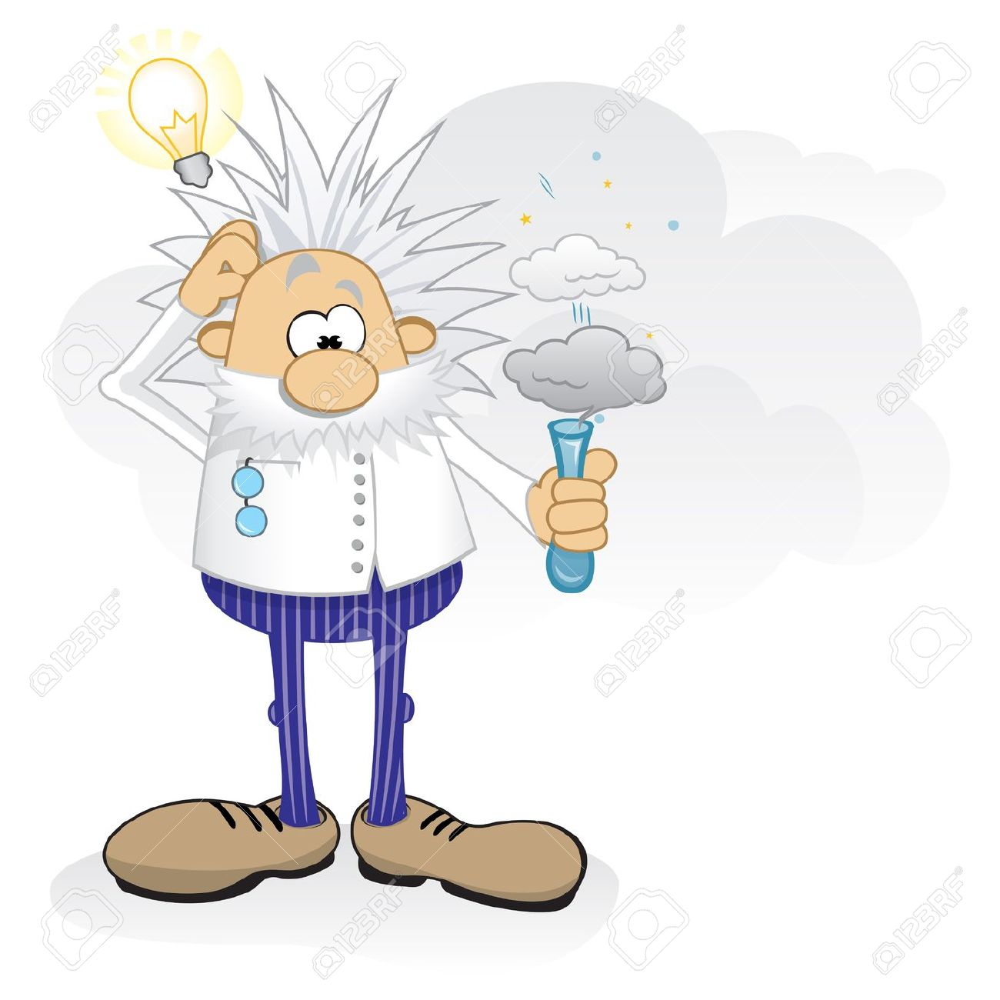

-

Research Assistant: Computer Architecture Lab
From December 2016, I have been invited to join "Computer Architecture Lab" as a Research Assistant. My responsibilities are under discussion and is not decided yet! -
Research Assistant: ESL Tools & Methodologies Lab
From May 2016 up to present, I have joined "ESL Tools & Methodologies Lab" as a Research Assistant. At first, I was an assist to Ms. Hanieh Hashemi on her M.S. thesis. At that time, we were focused on "Better than Worst-Case Design" techniques, and I had to gather testbeches, extract the cutomized-attributes during the execution of the processor, process the raw data, and interpret the results in the intended regime. The result of the co-operation between Hanieh and me is presented in the article "Early Prediction of Timing Critical Instructions in Pipeline Processor," presented in Baltic Electronics Conference; Taulin, Stonia; 2016. After the Hanieh's defence, I have taken the responsibility to continue BTWC techniques research. The results of my work are going to be publish in the article "A Low-Power and Low-Area Overhead Technique toward On-line Timing Error Resilience." -
Research Assistant: Silicon Intelligence & VLSI Signal Processing Lab
I was an RA in the "SI lab" between March 2015 and June 2016. During my presence in SI lab, I was an assist to Mr. Iraj Moghaddas on his PhD thesis by gathering testbeches, extracting the cutomized-attributes during the execution of the processor, and processing the raw data for further interpretation. We were focused on analyzing CPU loads, and based on the stress applied to each net in the design, we were trying to predict the ageing rate of the processor. Our work resulted in a journal article: "Fine-Grained Ageing Rate Prediction for Embedded Cores Using Instruction-Level Stress Monitoring." (It is under edition)